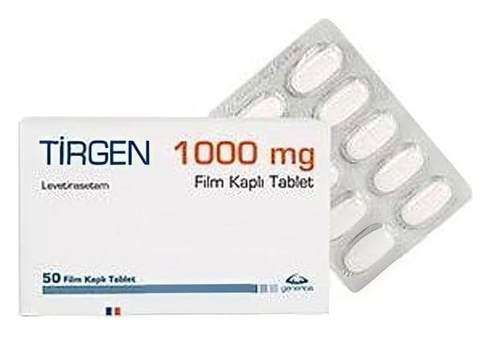

Tirgen 1000 mg Film Kaplı Tablet, 50 Adet

Ne için kullanılır
KT · Bölüm 1Tİ RGEN, beyaz renkli, oblong, bikonveks, tek yüzünde çentik olan film kapl ı tabletler halindedir. Her kutuda 50 tablet bulunur. T İ RGEN, epilepsi (sara) nöbetlerinin tedavisinde kullan ı lan antiepileptik (sara nöbetlerini önleyici) bir ilaçt ır. T İ RGEN, 16 ya ş ve üstü hastalarda ikincil olarak yayg ınla ş ma olan ya da olmayan k ısmi başlang ıçlı nöbetlerde tek ba şı na kullanılı r. 1 / 8
T İ RGEN, halihaz ı rda kullan ılan diğ er epilepsi ilaçlar ı na ek olarak: •4 ya ş ve üzerindeki çocuklarda ve eri ş kinlerde, yayg ı nlaşması olan veya olmayan k ısmi baş langıçlı nöbetlerde (sekonder jeneralize olan ya da olmayan parsiyel ba ş langıçlı nöbetler) • 12 yaş üzeri adölesan ve eri ş kinlerde s ıçrama tarz ı ndaki nöbetlerde (miyoklonik nöbetler) • 12 yaş ve üzeri adölesan ve eri ş kinlerde birincil yayg ı n kası lmalarla giden nöbetlerde (primer jeneralize tonik-klonik nöbetler) kullan ıl ır.